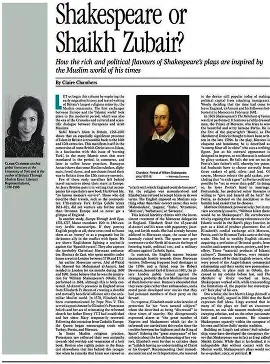
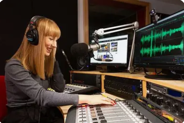

The Journalism Club's Home Page
"To inform and relay, for service of the Filipino."
"We dont just report, We Reveal". -Theodore Aplasca
Journalism is more than impression. It can draw a sharp line
between passive reporting and active truth-seeking.
The voice of every Journalist digs deeper in uncovering mysteries,
hidden stories, exposing injustice, and amplifying the voice of the
voiceless.
Journalism is more than impression. It can draw a sharp line
between passive reporting and active truth-seeking.
The voice of every Journalist digs deeper in uncovering mysteries,
hidden stories, exposing injustice, and amplifying the voice of the voiceless.
 |
 |  |
|---|
A declaration of purpose: To challenge silence, question power, and illuminate the facts that shape our world.
An Introduction to Journalism:
There are many categories YOU can try in Journalism. But there are two sides of Journalism that you can choose from:s
 |
|
|---|---|
| Broadcast Journalism - This involves reporting news through television, radio, or online platforms. Radio and Television Broadcasting are the main categories. Can be amplified with both English and Filipino. |
Print Journalism - This includes writing articles for newspapers, magazines, and online publications. There are 7 types of Print Journalism. We recommend you look at: News Writing, Feature Writing, Column Writing, and much more. |